Hello Internetz, Apparently a bunch of you are interested in how my mother and I managed to digitize 3,373 printed pictures in only about 2.5 months worth of free time. Below I will attempt to briefly explain how we accomplished this feat:
Here is a picture of the box/setup that I created to digitize the pictures:
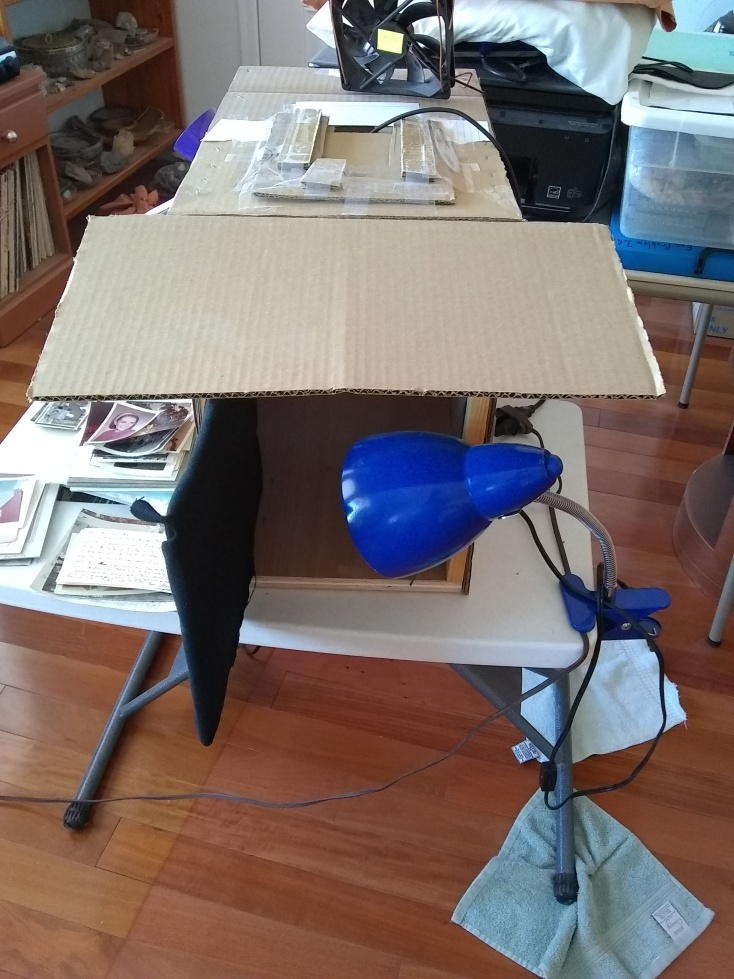Here is a picture of the side of the box:
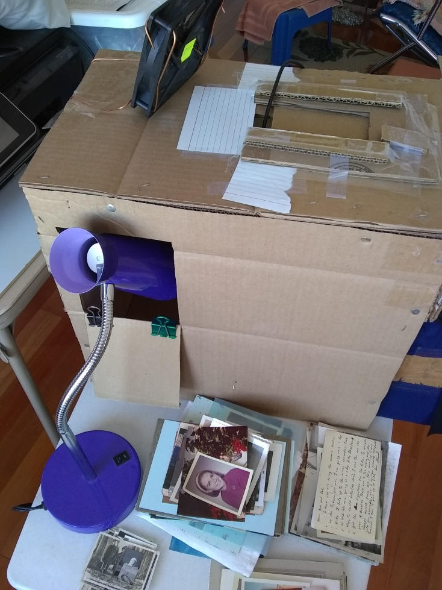Here is a picture of the top of the box showing the phone holder:
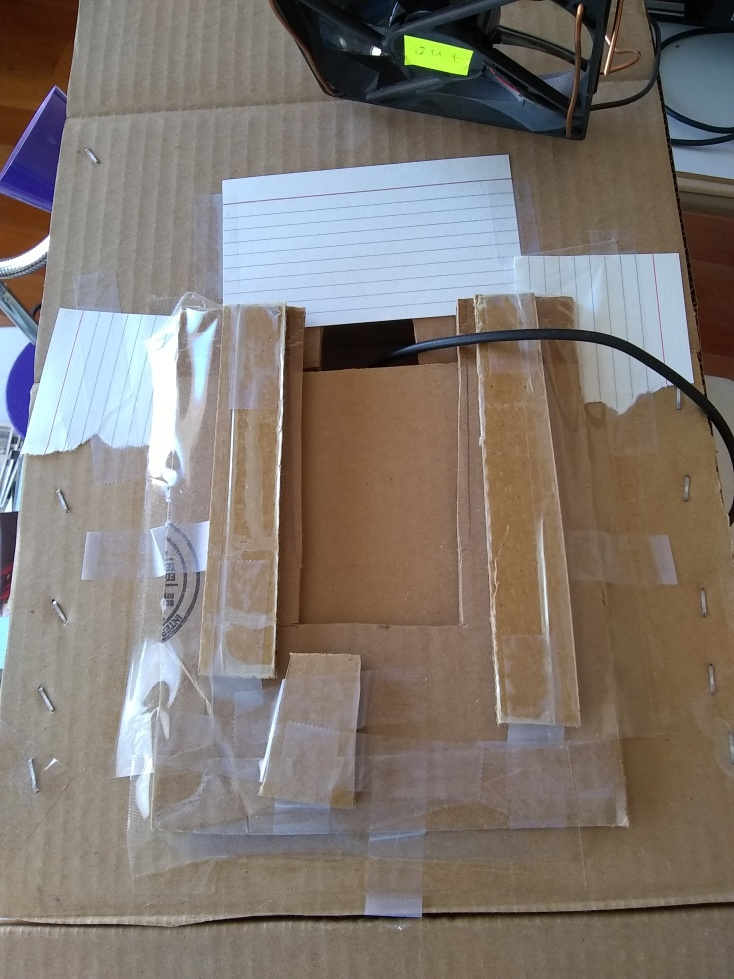Here is a picture of the front of the box showing some of the black fabric that we used to fix/adjust the lighting and avoid reflection from the glass. It also shows how we arranged the lights. Getting the lighting correct so that the resulting pictures were of a decent quality was a process that took a fair amount of trial and error:
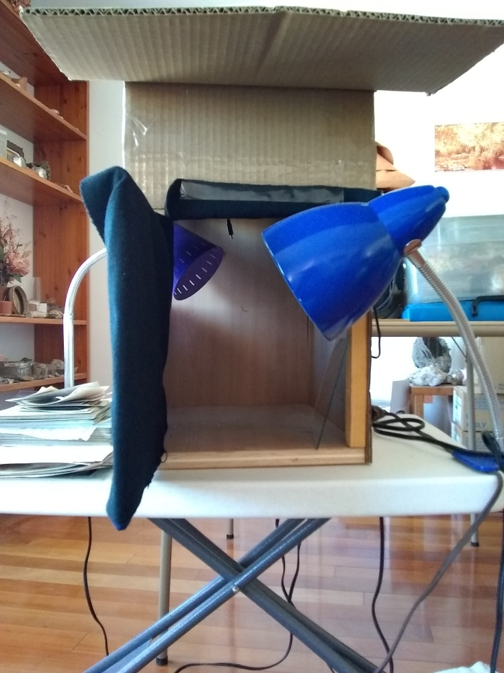Here is a picture of the inside of the box showing where the image and glass went. I used 3 staples in this orientation to avoid having to measure and be precise. I simply aligned the phone holder so that the resulting images came out parallel with the edges of printed picture. Again, this took some trial and error:
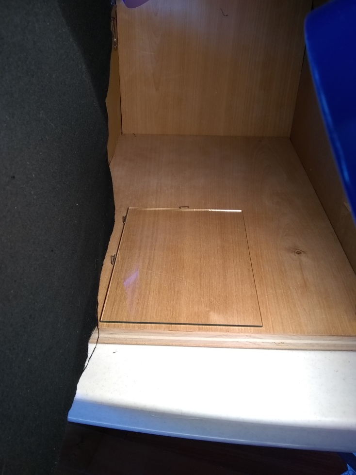Here is a picture of the phone in the phone holder on the top of the box. The box has a hole in the top allowing the camera to see what is inside. The phone we used was an LG g4. It is a terrible phone in my opinion, but I bought it for cheap on Ebay, and it has a good camera. This is important since being able to manually focus the camera avoided having the camera auto-adjust the focus, which would routinely result in blurry digital images being taken without our knowledge. The app we used on the phone was Open Camera. It allowed us to manually set the focus, as well as have the camera take a picture at an interval we set. This allowed my mother to simply swap out the photo after the phone snapped the picture, which meant that she could digitize a photo every 20 seconds:
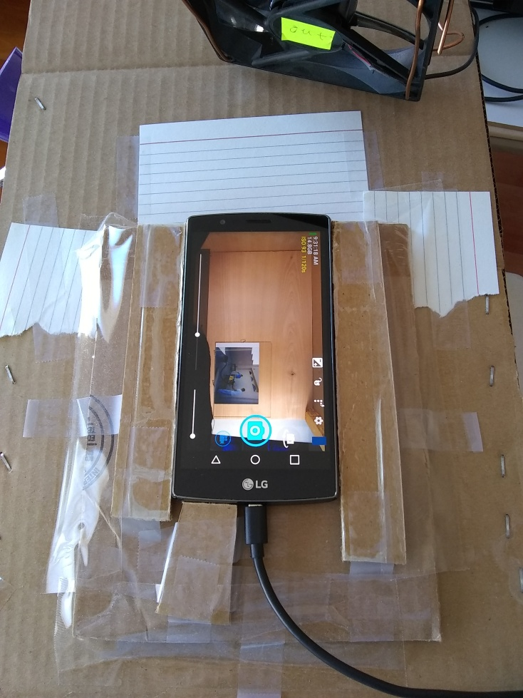Here is a picture of the pile of photos that we have digitized at this time. It took us about 2.5 months worth of weekends and random other free moments to digitize this many photos. All in all, we digitized about 3,373 printed pictures in that time:
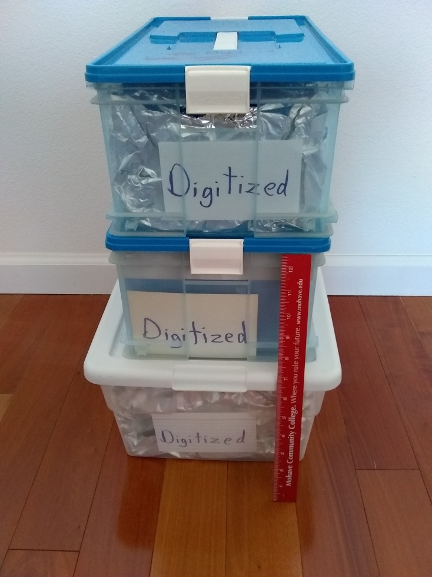Here are a couple of pictures showing both the inside of the box of digitized pictures and a bag containing an individual batch of digitized pictures. These will be re-packaged later, but for now, our goal was to keep them together so that we could go back through them at a later time and assign the correct date to the digital images. Each batch contains between about 40 and 90 pictures that are all the same size and the same orientation. We also tried to keep all of the pictures from a given time period together. The process of sorting the photos by size and orientation was done prior to the digitization process as it makes it much easier to process the resulting digital images. We also made sure to clearly label the batches of photos that we digitized so that we didn't end up re-digitizing pictures that we had already digitized. Maintaining order with this many photos is critical!:
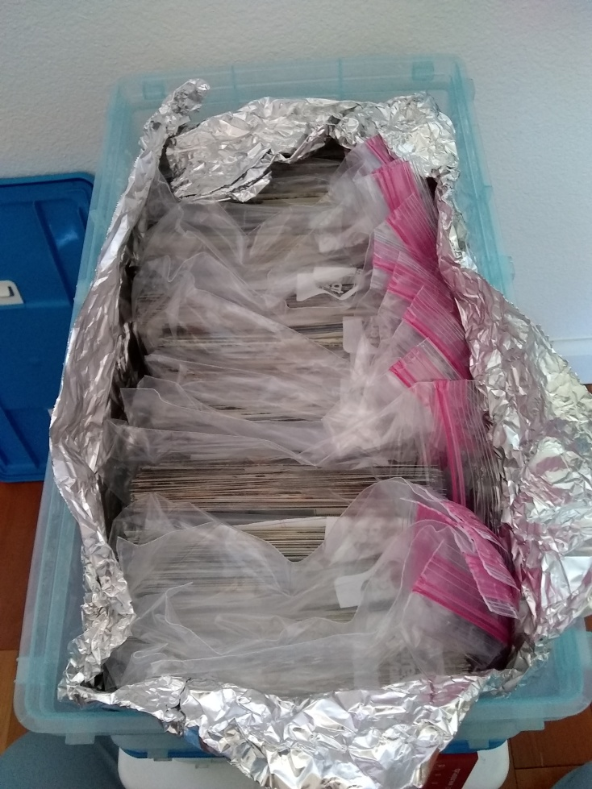 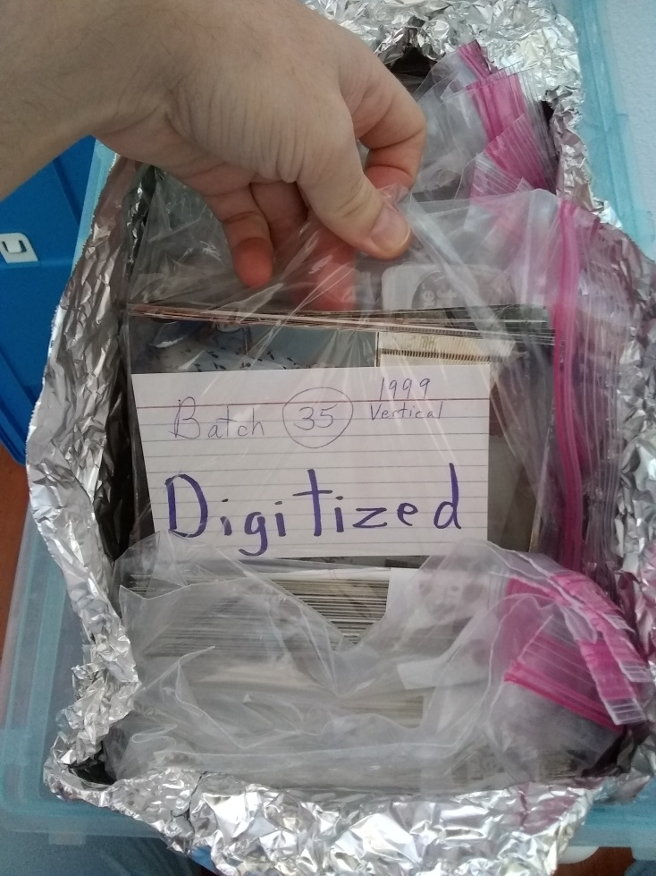Here is a picture of where we got the glass from. We knew that we would be dealing with this glass a lot so I carefully sanded the edges so that it wasn't so sharp. This also helped it not scratch the pictures as it was put onto them. We broke this glass at least once throughout the process, but it just meant we had to clean up the mess and sand a new piece:
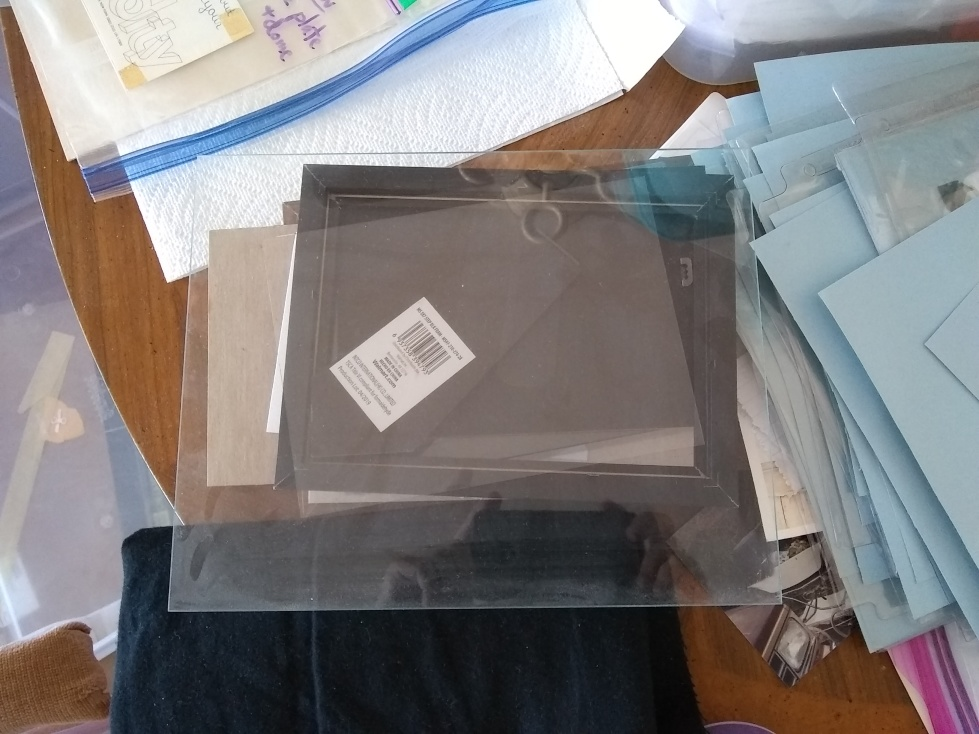Once my mother had finished going through a given batch of images, I would attach the phone to my computer as shown below, allow the computer to access the files on the phone, and proceed into the back-end processing:
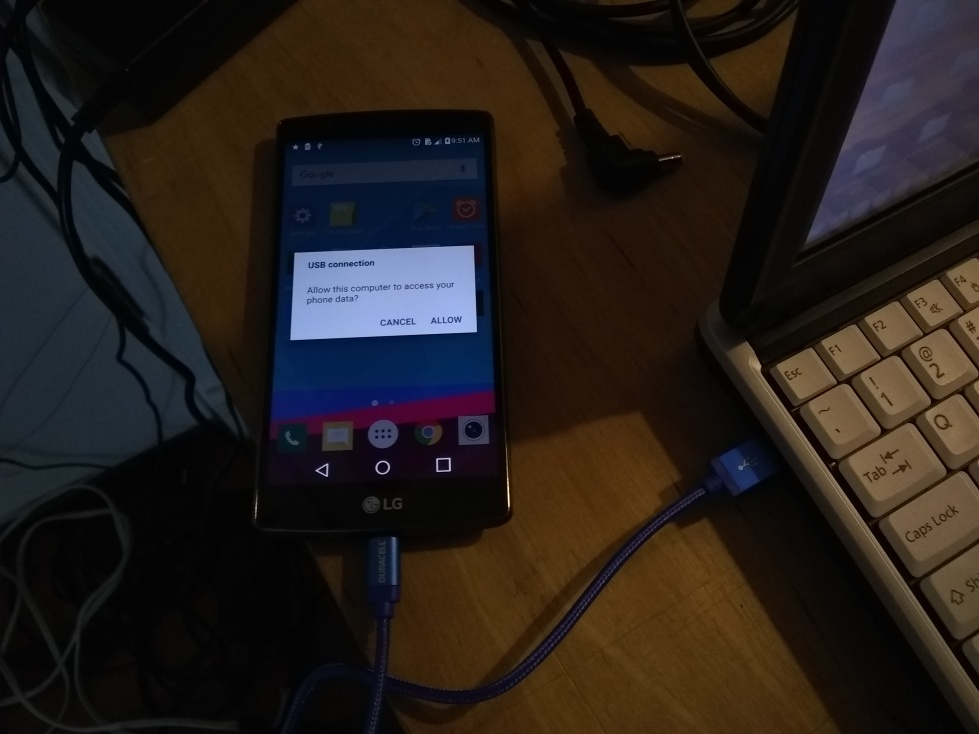The back-end processing basically involved 1. Transferring the raw photos onto my computer, 2. Cropping them, 3. Renaming them.
The raw images from the phone looked something like this:
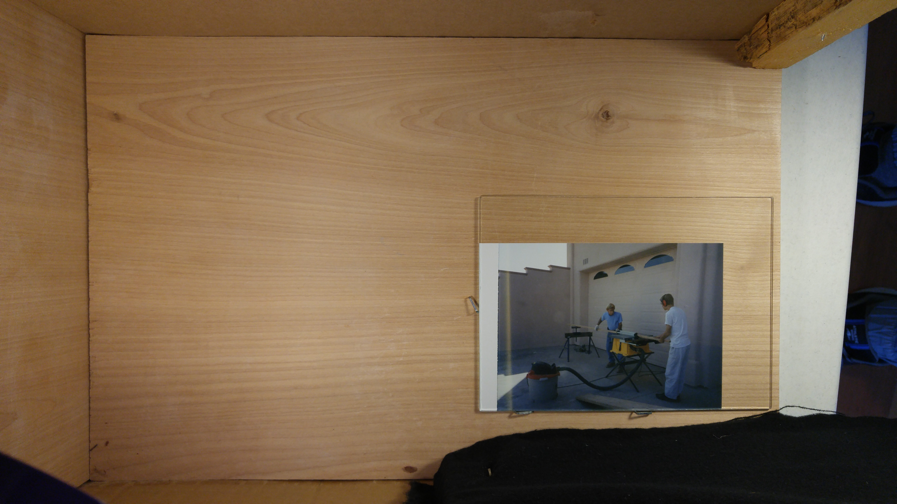I have created a video explaining how I processed the pictures on my computers. If you are running Ubuntu, you will probably be able to follow along. However, Windows and Mac users probably won't be able to complete all of the steps without some modifications. You can find the video here.
Here is the command that I used to bulk-crop all of the images in a folder:
mogrify -crop 1485x1052+2812+1412 *.jpg -repage
Here is another command that will rotate a bunch of images that might be useful if you need it:
mogrify -rotate "90" *.jpg -repage
Here is another command that will change all of the dates on a folder full of images if exiftool is installed:
exiftool -overwrite_original_in_place -AllDates="2003:06:30 01:00:00" *.jpg
Some tips for anyone attempting to do something similar to this process:
1. You will need to do a bunch of trial and error with many different variables before you get a result that is a decent quality. I recommend that you find a set of representative images and play around with them first to perfect the process of digitization. Once you have this done, then you can start actually processing batches of images. It is worth it to do this initial step since, if you are going to process thousands of images, you probably don't want to find out after the fact that half of them are blurry or have reflections or are discolored.
2. If you use any of the commands listed above, be aware that they will directly alter all of the jpeg images in the folder in which you run them. Thus, I suggest that you duplicate the whole folder that contains the images before you run the command so that you have a backup in case anything goes wrong. Be sure you know what you are running before you run it.
3. Be careful with the glass as you digitize the images. Sanding the edges helps avoid cuts. Consider wearing gloves. If you break the glass, be careful cleaning it up.
4. I am not an expert at doing this. I was able to get some pretty good results by experimenting and fiddling with things. Your results will depend on your skill level in this regard and on how much time you dedicate to fiddling with the process. Also, I am sure this process could be improved significantly. However, for my purposes, I have completed my task, and thus, will not be refining this process any further. You however, are free to take this idea and run with it if you wish.
I hope you have enjoyed this page! If you have, you might find other interesting things like this on my home page. Happy digitizing!